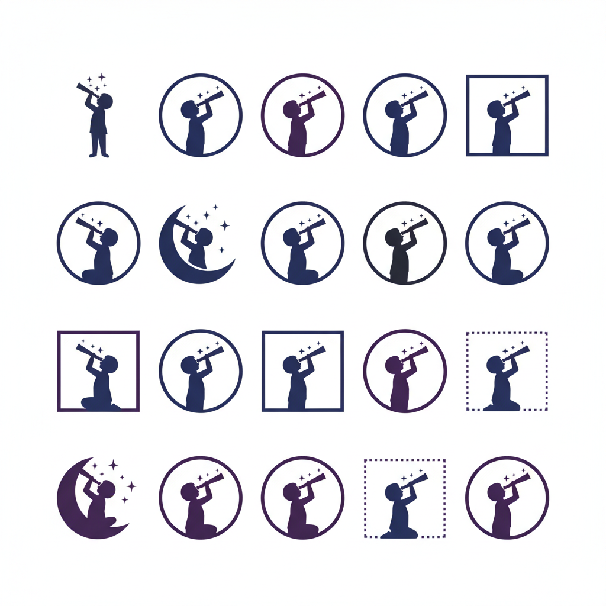
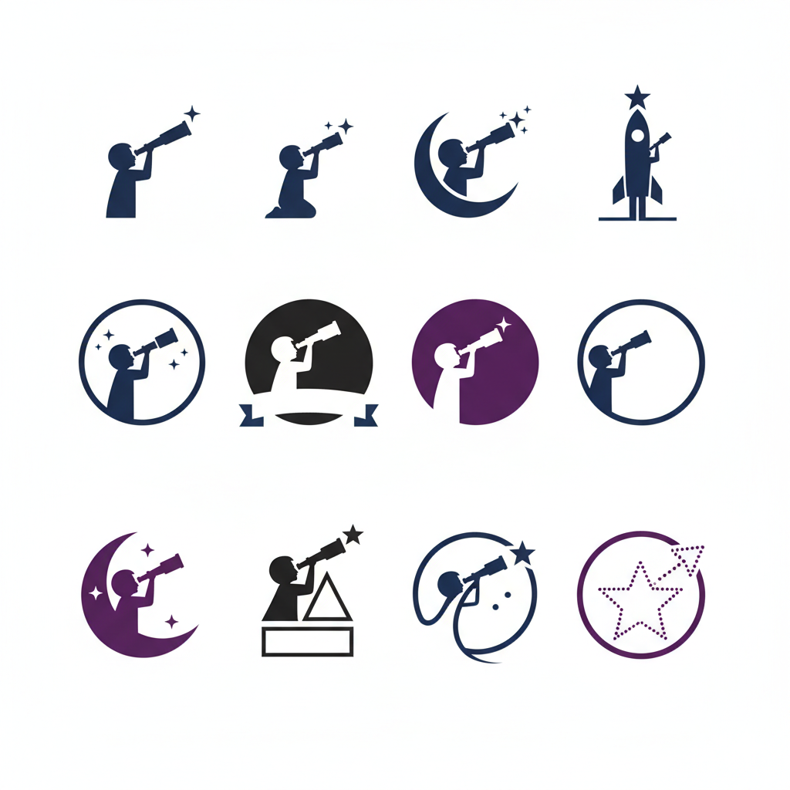

Alege Identitatea Vizuală
Analizați conceptele de logo și experimentați cu diferite palete de culori folosind meniul de jos.

Concept #1
ModernUn design minimalist care pune accent pe litera "Q" și ideea de orientare/busolă.
Concept #2
OrganicForme fluide care sugerează creștere și dezvoltare personală.

Concept #3
AbstractO reprezentare abstractă a conexiunilor și a drumului în carieră.
ℹ️ Notă: Imaginile de mai sus sunt placeholder. După ce alegeți o direcție, logo-urile finale vor fi randate aici.